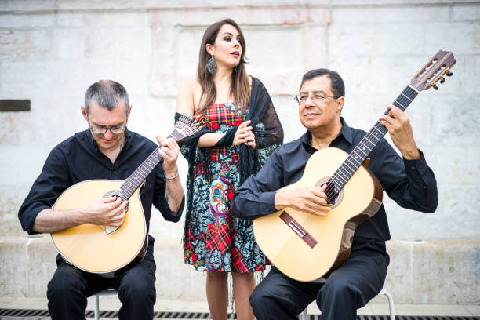
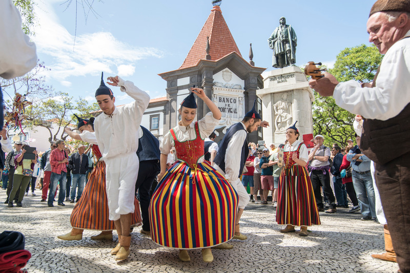
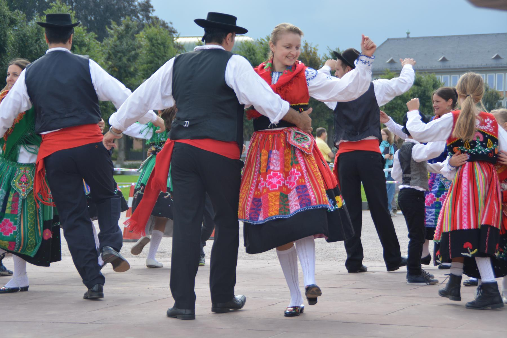

A cultura portuguesa é rica e diversificada, refletindo séculos de história, influências mediterrâneas, atlânticas e africanas. O Fado, as danças tradicionais, as festas populares e a arte são apenas alguns dos aspectos mais marcantes da cultura de Portugal.
O fado é um estilo musical português profundamente enraizado na cultura do país e considerado Património Imaterial da Humanidade pela UNESCO. Surgido nos bairros populares de Lisboa, especialmente em Alfama e na Mouraria, no início do século XIX, o fado expressa emoções intensas de saudade, amor e melancolia, sentimentos típicos da alma portuguesa. As suas canções, geralmente acompanhadas pela guitarra portuguesa e pela viola, são interpretadas com um tom íntimo e nostálgico, como uma conversa direta com o ouvinte.
Entre as vozes mais célebres do fado estão nomes como Amália Rodrigues, que popularizou o género no mundo, e artistas contemporâneos como Mariza e Carminho, que mantêm viva a tradição ao mesmo tempo que inovam as suas interpretações. O fado é muito mais que música para os portugueses; é uma expressão da identidade nacional e da história do país, ecoando nas tabernas, nas casas de fado e nos corações de quem o escuta.
As festas populares portuguesas são uma celebração vibrante da cultura, tradição e espírito comunitário, refletindo a diversidade regional do país. Cada região, do norte ao sul, e também as ilhas dos Açores e da Madeira, tem festividades próprias que celebram santos padroeiros, colheitas, tradições marítimas, e o folclore único de cada localidade. Desde as Festas de São João no Porto, onde balões de papel e martelinhos tomam conta das ruas, até ao Carnaval de Torres Vedras e ao Círio de Nazaré, cada celebração tem um encanto próprio, mantendo viva a herança cultural portuguesa e proporcionando momentos de convívio e alegria.
Entre essas celebrações, o Bailinho da Madeira ocupa um lugar de destaque. Representando a tradição cultural do arquipélago da Madeira, o Bailinho é uma dança popular que combina música, canto e movimento, sendo símbolo de identidade para os madeirenses. Com raízes no século XIX, é dançado em grupo e acompanhado por instrumentos típicos como o braguinha, a rajão e o machete. As letras das canções, geralmente alegres e satíricas, falam da vida quotidiana e dos costumes locais.
As danças tradicionais portuguesas representam a diversidade cultural e o espírito comunitário do país. No norte, o Vira do Minho destaca-se pela sua energia, onde pares giram em círculos ao som animado da concertina. No Alentejo, a Moda Alentejana é marcada por um ritmo mais pausado e letras melancólicas, refletindo a vida rural. No Ribatejo, o Fandango é uma dança vigorosa, muitas vezes associada aos campinos, que exibem habilidade e força.
Estas danças são acompanhadas por instrumentos típicos e trajes regionais, e mantêm vivas as tradições populares de cada região, passando de geração em geração.
